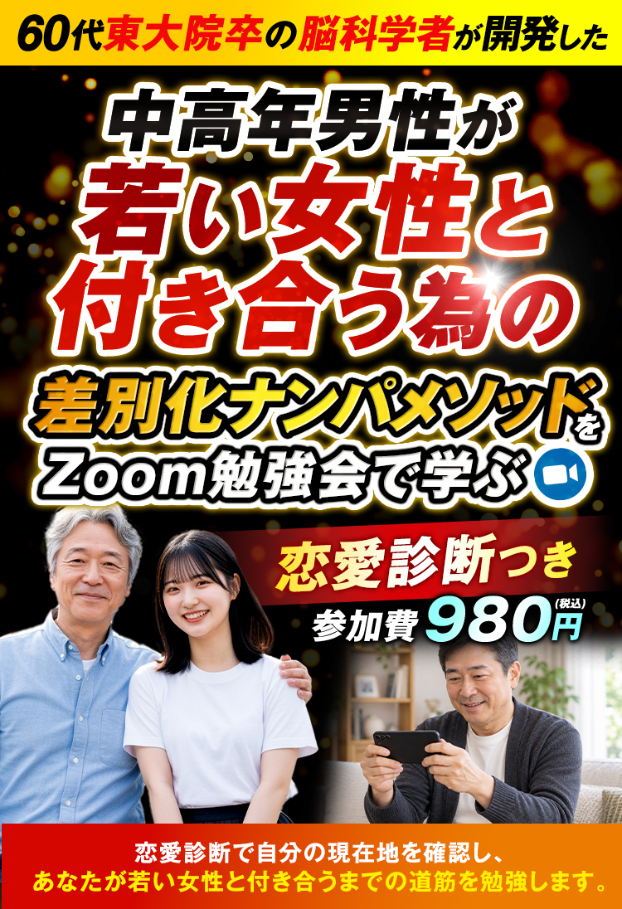
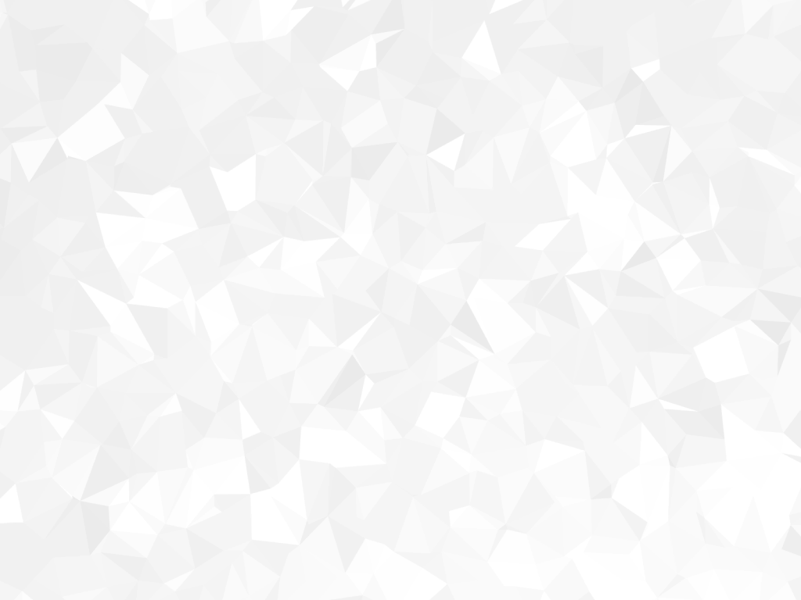

差別化ナンパメソッド 恋愛診断つきZoom勉強会

「差別化ナンパメソッド」Zoom勉強会
恋愛診断つき
980円
ご満足いただけなければ、980円を全額返金いたします。
顔出し不要
匿名参加OK
マイクオフOK
※980円に恋愛診断とZoom勉強会の両方を含みます。

頑張っているのに、
若い女性との恋愛が
前に進まない。
同年代の女性ではなく、
若い女性と付き合いたい
アプリで頑張っているが、
若い女性になるとうまくいかない
結婚相談所に登録したが、
若い女性は無理だと言われた
中高年になってしまったが、
若い女性と結婚して
子供のいる家庭を築きたい
年齢やルックス、コミュニケーション能力に関係なく
若い女性と付き合える方法を知りたい
年齢や見た目であきらめるのは
まだ早いです
あなたは今まで、アプリや結婚相談所で
頑張ってきたかもしれません。
しかし、アプリや結婚相談所は、
年齢や見た目で判断されてしまう厳しい戦場です。
どんなに歳をとっても、
どんな見た目でも、
若い女性とうまくいく方法があるのです。
しかし、この方法は、
ほとんどの男性は知りません。
Wakaが伝える「差別化ナンパメソッド」は、
中高年の男性が若い女性と交際することに
特化した方法なのです。
中高年男性が若い女性から、
「この男性とはアリ」
という評価をしてもらえる方法。
女性脳に特化した接し方で、
他の男性と差別化し、
若い女性の心をわしづかみにする方法。
あなただけの魅力を最大限に伝える、
画期的な科学的メソッドです。
最初に、恋愛診断で
あなたの恋愛の
「現在地」を確認します。
出会い
そもそも女性との接点が少ない。出会う前に止まっている。
会話
出会えても相手に刺さる会話ができていないと、相手から遠ざけられる。
距離の縮め方
お茶や食事以上に関係が進まない。踏み込むタイミングが分からない。
恋愛診断で、この3つの
どこに課題があるのかを整理します。
出会いで止まっている方と、会話で止まっている方では、見直すことが違うからです。
診断は、あなたを
「モテる・モテない」で決めつけるためのものではありません。
やみくもにテクニックを増やす前に、
今の自分に必要なことを見つけるために使います。
恋愛診断で
自分の現在地を知る。
そこから
若い女性と付き合うまでの道筋を
Zoom勉強会で学ぶ。
なぜ、
Zoom勉強会なのか？
「自分は、恋愛のどこかでつまずいている」
そこまで分かっても、具体的にどこでつまずいているかは、自分だけでは見えにくいものです。
丁寧に話したつもりが、
相手には全く刺さっていなかった。
仲良くなれたと思って踏み込んだら、
相手はまだ警戒していた。
女性との接し方の難しさは、ここにあります。
まずは、恋愛診断で現在地を確認したあとに、Zoom勉強会で今後の道筋を学びます。
「今の自分なら、どこから始めるか」を考え、分からない点をその場で質問できるのがZoom勉強会です。
出会いでつまずいている方は、
出会い方の見直しから。
会話でつまずいている方は、
会話の見直しから。
距離を縮められない方は、
縮め方の見直しから。
診断結果と照らし合わせながら参加することで、今後、最速で若い女性と付き合えるために「自分が次に取り組むこと」へつなげていきます。
顔出し不要・マイクオフOK・匿名参加OK。
質問はチャットで大丈夫です。
人前で恋愛の悩みを話すのが苦手な方もご参加いただけます。
Zoom勉強会で
お伝えすること
恋愛診断の結果を踏まえて、次の内容を解説します。
01
中高年男性が
若い女性と出会える
最高の場所とは
02
若い男性と
同じ戦い方をすると
うまくいかない理由
03
男性脳と女性脳の
根本的な違い
04
女性脳に
特化した方法とは
どんな方法なのか
05
なぜ普通の中高年が
若い女性と
次々と付き合えるのか
若い男性と同じ戦い方ではなく、
中高年のあなたが最速で結果が出る方法を伝授いたします。
＼さらに!!／
Zoom勉強会お申込み者全員に
特典動画をプレゼント！
Zoom勉強会にお申込みされた方全員に、
年齢差のある恋愛を学ぶ特典動画もお届けします。
追加料金はかかりません。
若い女性との恋愛で、避けたい行動
中高年男性の魅力を伝える「差別化」の考え方

相手から好意を持ってもらうための接し方
若い女性との出会いのきっかけ
出会ってから交際に進むまでの流れ
Zoom勉強会の開催前にぜひご覧頂き、
今後の参考にしてください。
恋愛診断とZoom勉強会を、
セットで980円。
含まれるものは、恋愛診断と、
今後の戦略のZoom勉強会です。
さらに、
勉強会へお申込みされた方には
特典動画をお届けします。
「もっと知識を増やさなければ」
と思う前に、一度、自分の現在地と
取り組む順番を整理してみませんか。
何がうまくいかないのか分からないまま、
同じ頑張り方を繰り返す。
その状態を見直す第一歩として、ご活用ください。
980円
全額返金保証
診断結果とZoom勉強会にご満足いただけなければ、
お支払いいただいた980円を全額返金します。
お申し込みから
参加までの流れ
STEP 1
恋愛診断の質問に回答する
案内に沿って恋愛診断の質問に回答します。
STEP 2
980円で恋愛診断の結果を閲覧し、
自分の現在地を確認する
980円で診断結果を閲覧し、
「出会い・会話・距離の縮め方」のどこでつまずいているかを確認します。
STEP 3
Zoom勉強会に申し込む
必要事項を入力し、Zoom勉強会のお申し込みをしてください。
その際に、特典動画を受け取ってください。
STEP 4
Zoom勉強会へ参加する
案内されたZoomリンクから参加し、今後の自分の戦略を学びます。
疑問があれば、チャットでご質問ください。
現在60代。東大院卒（脳科学専攻）。元予備校講師。NLP有資格者。YouTubeチャンネルを運営。
50歳まで恋愛に悩んだ自身の経験と、東京大学で学んだ脳科学を恋愛に応用。
若い男性と同じ条件で競わない、中高年男性が若い女性と付き合うための「差別化ナンパメソッド」を開発。この方法で、自身が200人以上の20代女性との交際に成功する。
Waka塾では、差別化メソッドを伝えるだけでなく、受講生の実際の会話を一つずつ添削し、若い女性に刺さる会話への改善をしている。
40代・50代・60代の男性1,000名以上を指導。年齢差のある若い女性との交際や結婚を実現した生徒が続出している。
出版実績
ナンパの科学
講師プロフィール
Waka（ワカ）
「差別化ナンパメソッド」Zoom勉強会
恋愛診断つき
980円
ご満足いただけなければ、980円を全額返金いたします。
顔出し不要
匿名参加OK
マイクオフOK
※980円に恋愛診断とZoom勉強会の両方を含みます。